.png) Introduction
Introduction
Clinical diagnosis is inherently multimodal. Clinicians integrate imaging (e.g., radiology, pathology), physiologic signals and laboratory values with patient history and examination to reach an open-ended conclusion. Early deployments of large-scale foundation models in medicine were largely text-only, useful for evidence summarization, retrieval, and exam-style QA, but limited in supporting the step-wise, uncertainty-aware reasoning required by diagnostic practice. As reasoning-oriented models emerged, they began to externalize intermediate thinking (e.g., iterative deliberation or tool-augmented reasoning). The field has since progressed toward multimodal systems that jointly process images and text, and toward agentic configurations that can plan multi-step procedures, call tools, retrieve evidence, and self-check.
Within this trajectory, GPT-5 exposes multiple modes beyond a single backbone, including Auto routing, compact and high-capacity reasoning variants (Thinking mini, Thinking, Pro), retrieval-augmented settings (Web Search), and agentic configurations (Agent, Deep Research). This diversity raises a central question for medicine: how do different modes, reasoning depth, retrieval, and agent behavior shape performance and reasoning quality when the task is multimodal diagnosis rather than generic visual question answering.
Benchmarks have evolved alongside models, from multiple-choice exams to resources that incorporate images and, in some cases, structured context. However, prevailing protocols still emphasize short-answer or closed-ended formats and often depend on automatic graders whose agreement with clinicians is insufficiently established. As a result, current scores provide limited visibility into whether models or systems can synthesize images and patient context into a defensible, open-ended diagnosis.
To bridge these gaps, we study ten GPT-5 configurations (details in Methods) on 161 curated, clinically grounded cases across diverse body systems, each requiring multimodal evidence integration. We introduce an open-ended judging criteria and scoring protocol that maps model outputs to reference diagnoses (allowing synonyms, subtypes, and near matches). Evaluation comprises both expert adjudication (human judging) and a scalable machine-judging procedure for large-scale consistency checks. Based on human evaluation, we analyze the effects of retrieval, body-system variation, multimodal input quality, and agentic planning on diagnostic accuracy and reasoning quality.
Our results indicate that reasoning models achieve the strongest human-adjudicated accuracies yet fall short of clinical adequacy. Pro reaches 0.4596, and its web-augmented counterpart increases only marginally to 0.4658 (Δ ≈ +0.0062), whereas adding web search to the Auto router reduces accuracy by 0.1179 (p < 0.001). Retrieval also rarely overturns an incorrect base prediction: when the base model is wrong, the corresponding web configuration is correct in only 10.1–19.1% of cases.
Error profiling indicates that evidence integration is the principal bottleneck: “Evidence-chain” failures (missing, inconsistent, or circular reasoning steps) dominate, and misinterpretation of visual findings accounts for up to ∼60% of reasoning failures in several models. Notably, agentic configurations that interleave planning, tool use, and retrieval do not confer a diagnostic advantage; in our benchmark they underperformed model-only baselines and obscured their reasoning traces, underscoring the need for transparent and robust evidence integration in multimodal diagnosis.
To scale assessment without sacrificing rigor, a rubric-aligned GPT-5 machine judge is ∼5–10% stricter than clinicians yet attains substantial overall concordance (mean Cohen’s κ ≈ 0.63), supporting its use as a scalable proxy when paired with expert review. Taken together, these data indicate that mode choice, particularly deeper reasoning and disciplined retrieval, governs reliability in open-ended multimodal diagnosis, whereas long agentic traces without robust evidence integration can degrade performance.
Dataset Overview. Our benchmark is built from MedXpertQA, focusing on its diagnosis subset of multimodal clinical cases. Each case includes patient history, symptoms, examination findings, one or more medical images, and a verified diagnostic label.
Selection & Processing. We retained only cases requiring a single, clinically actionable diagnosis, excluding items on prognosis, mechanisms, or multi-answer scenarios. Multiple-choice questions were standardized into open-ended form. All items were reviewed by a medical expert to ensure diagnostic relevance and accuracy.
Composition. The final dataset contains 161 cases across five body systems — cardiovascular (40), digestive (34), respiratory (34), skeletal (31), and nervous (22). Each includes a patient narrative, multimodal imagery (CT, MRI, X-ray, PET, pathology, EEG/ECG, etc.), and a validated ground truth diagnosis.
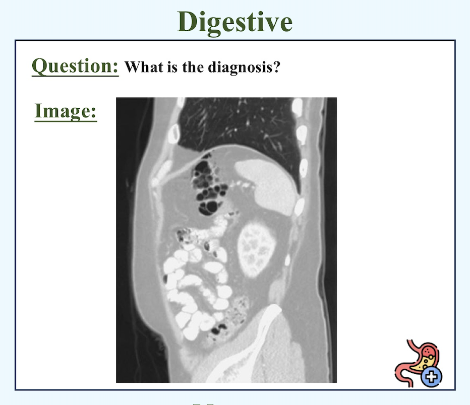
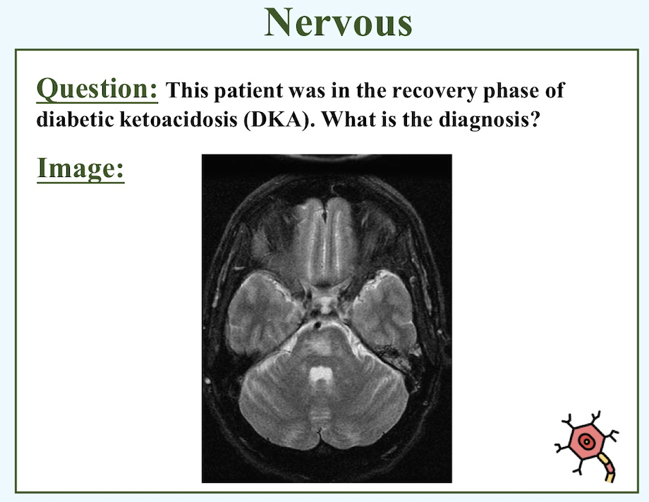
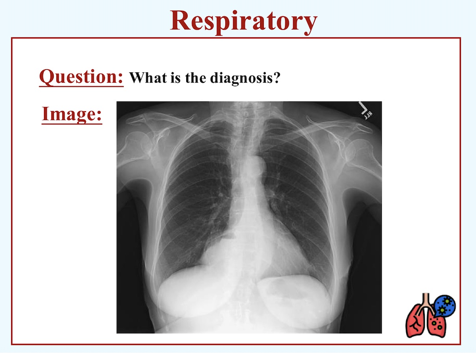
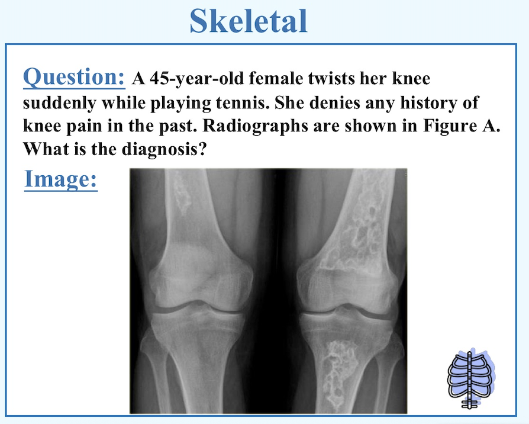
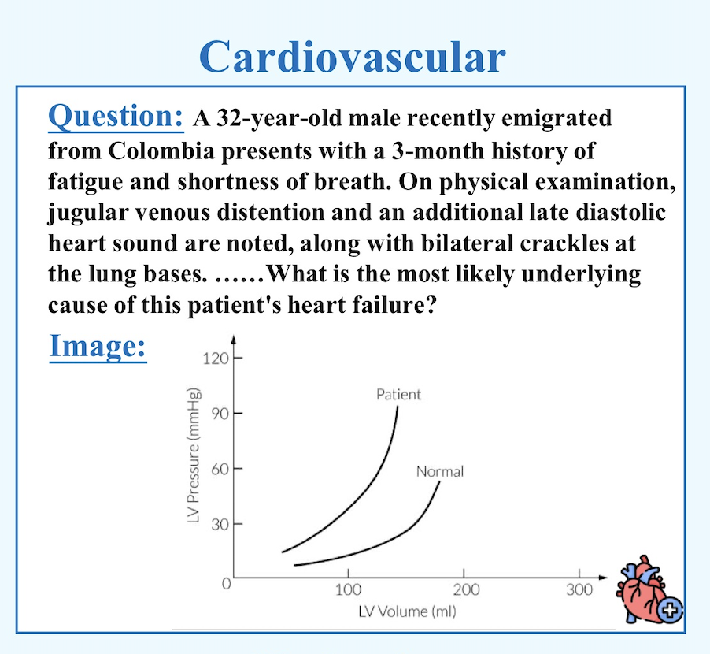
| Category | Model | Accuracy |
|---|---|---|
| LLM | Auto | 0.3850 |
| Thinking mini | 0.3292 | |
| Thinking | 0.4161 | |
| Pro | 0.4596 | |
| Web-Search | Auto Web Search | 0.2671 |
| Thinking mini Web Search | 0.3478 | |
| Thinking Web Search | 0.4410 | |
| Pro Web Search | 0.4658 | |
| Agent | ChatGPT Agent | 0.3664 |
| Deep Research | 0.2981 |
 Physician Judge Criteria
Physician Judge Criteria
| Criteria | Matches clinical evidence | Clinical reasoning tolerance | Correct site / polarity | On topic (no hallucination) | Diagnostic granularity tolerance | Minor / format difference | ||||||
|---|---|---|---|---|---|---|---|---|---|---|---|---|
| GT | GPT | GT | GPT | GT | GPT | GT | GPT | GT | GPT | GT | GPT | |
| Both (1 = correct) | ✓ | ✓ | ✓ | ✓ | ✓ | ✓ | ✓ | ✓ | Δ | Δ | Δ | Δ |
| GT (0 = wrong) | ✓ | ✗ | ✓ | ✗ | ✓ | ✗ | ✓ | Δ | Δ | Δ | Δ | Δ |
| GPT (1 = correct) | Δ | ✓ | Δ | ✓ | Δ | ✓ | Δ | ✓ | Δ | Δ | Δ | Δ |
| Other (0 = wrong) | ✗ | ✗ | ✗ | ✗ | ✗ | ✗ | ✗ | ✗ | Δ | Δ | Δ | Δ |
Legend: ✓ = fully meets, Δ = partially meets, ✗ = violates.
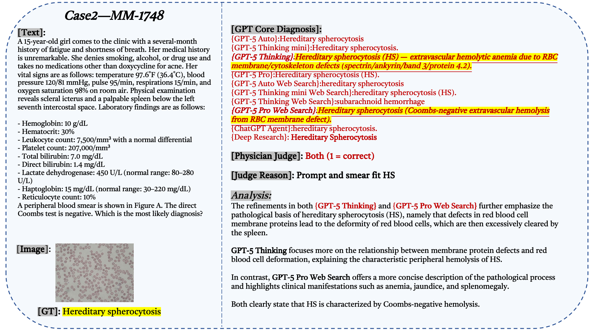
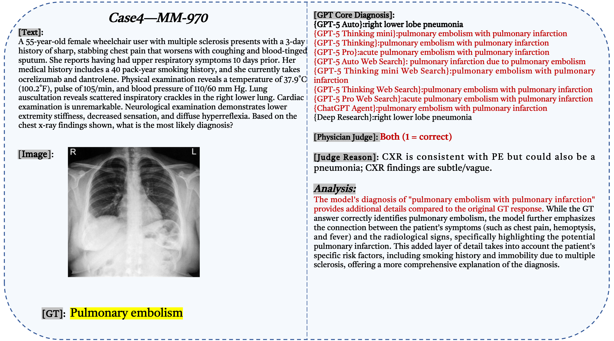
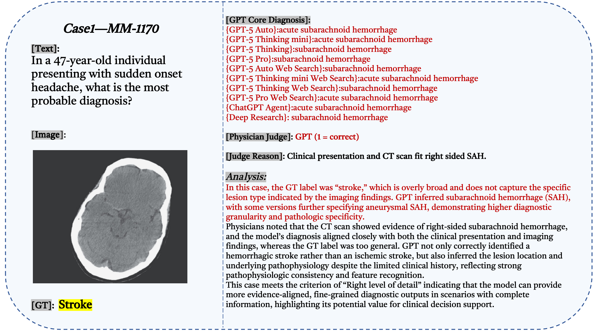
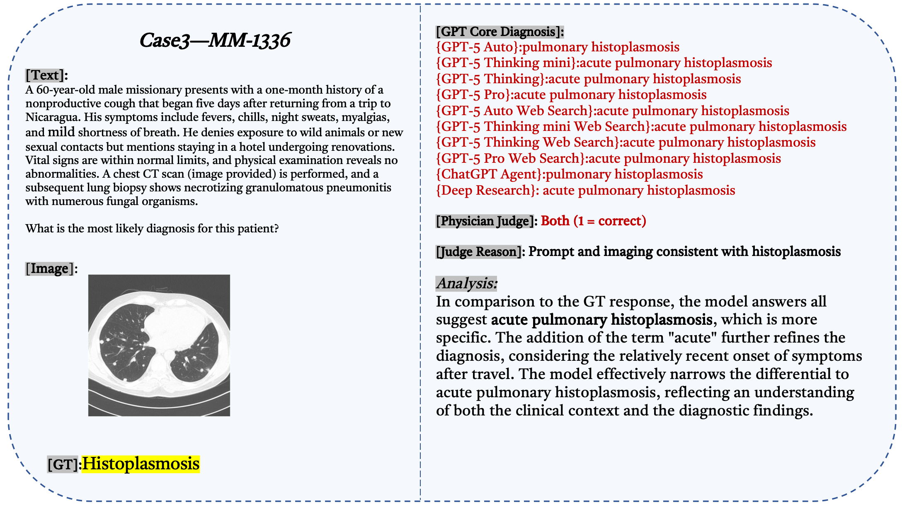
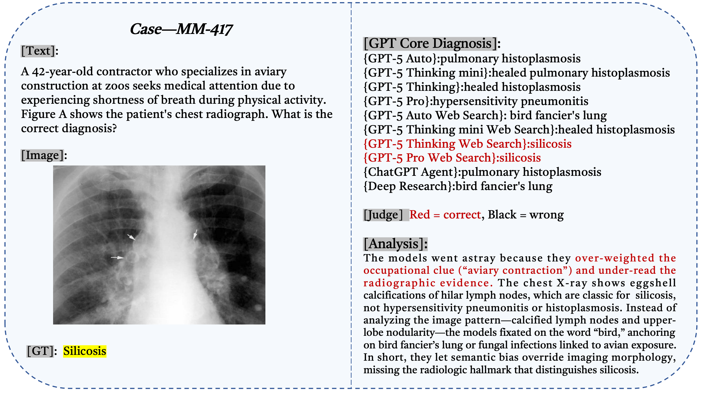
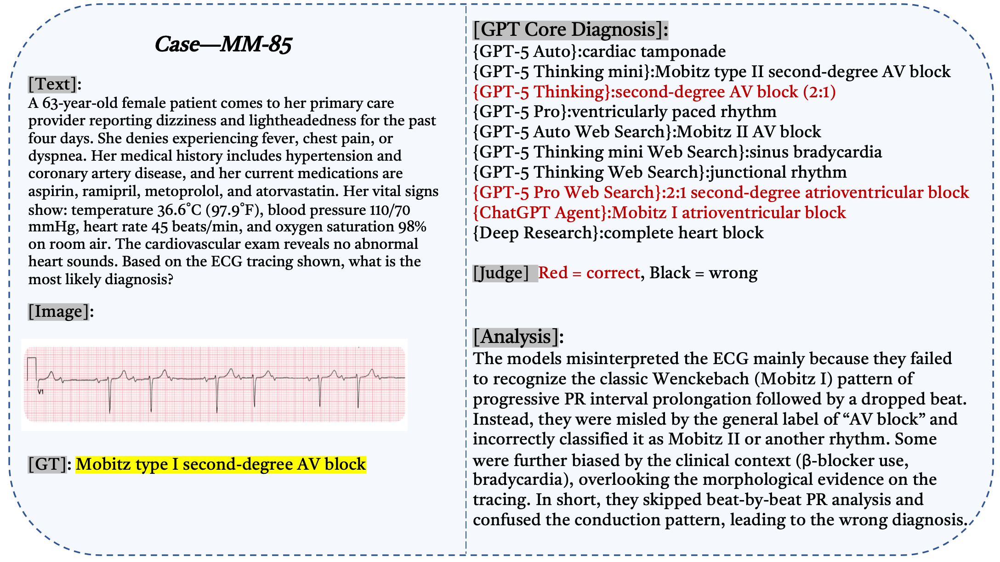
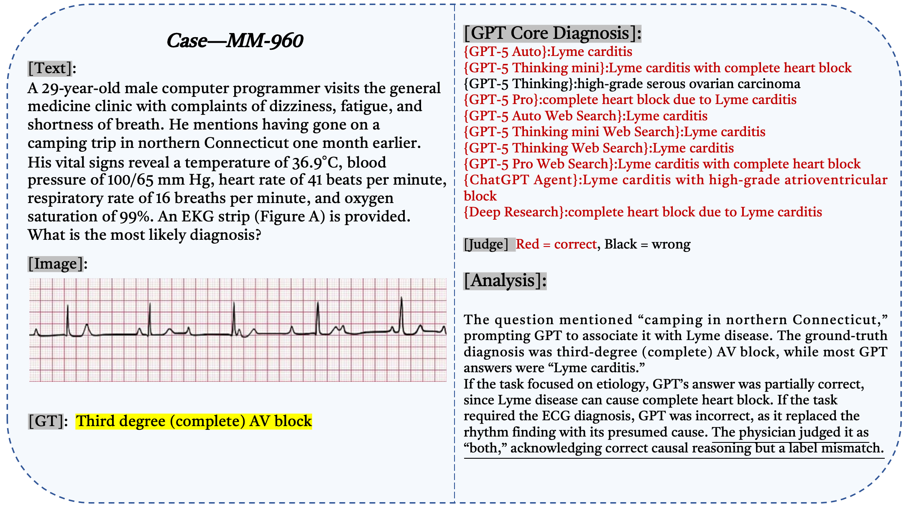


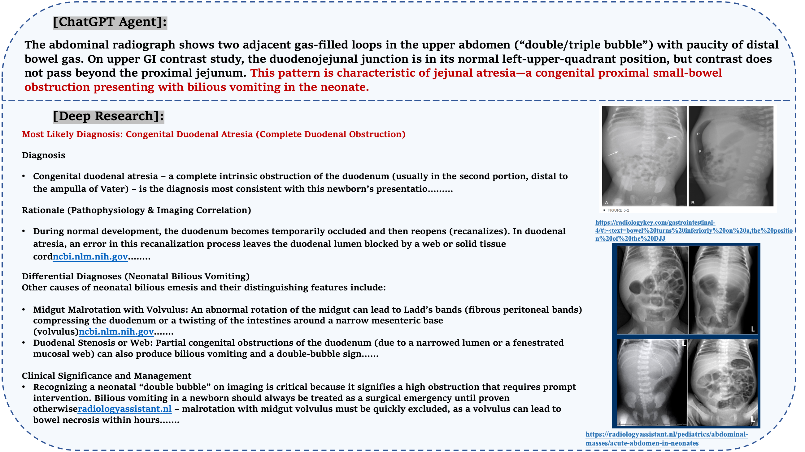
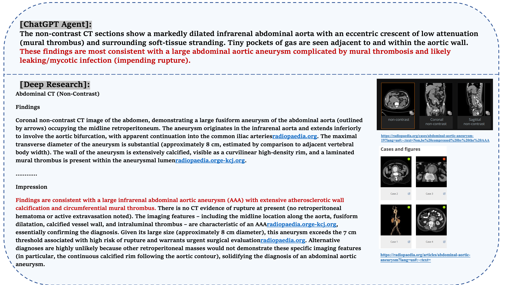
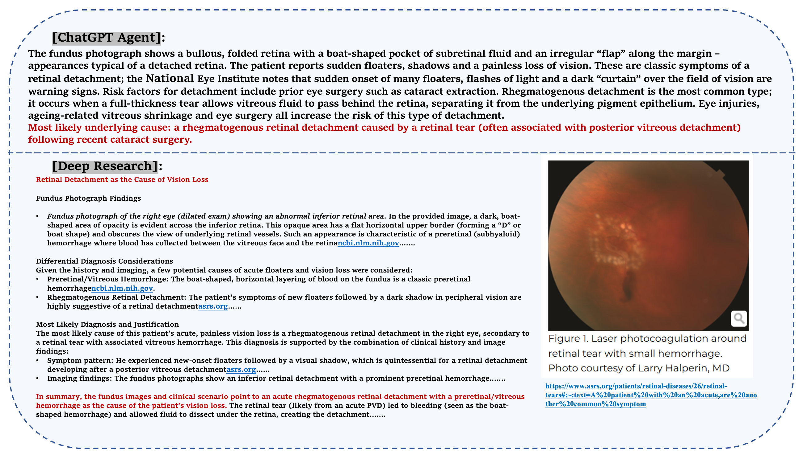
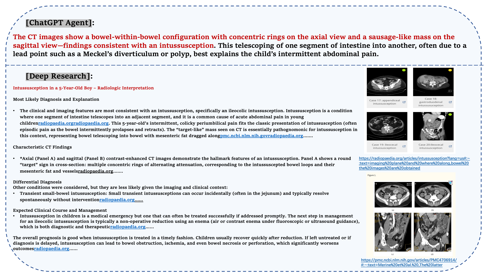
 Model Information
Model Information
| LLM Model Versions | |||||
|---|---|---|---|---|---|
| Model Version | Auto (GPT-5) | Thinking mini | Thinking | Pro | Auto Web Search |
| Test Date (mm.dd.2025) | 08.09 | 08.30 | 08.09–08.10 | 08.09 | 08.11 |
| Web Search and Agent Model Versions | |||||
|---|---|---|---|---|---|
| Model Version | Thinking mini Web Search | Thinking Web Search | Pro Web Search | Deep Research | Agent |
| Test Date (mm.dd.2025) | 08.16 | 08.11 | 08.10 | 08.14–08.20 | 08.11–08.13 |
Note: ChatAuto is called ChatGPT-5 as of 08.09.2025.
@inproceedings{2025—Evaluation,
title={Evaluating GPT-5-Based AI Agents in Medicine},
author={Shaohui Zhang，Jiarong Qian，Kai Zhang，Zhiling Yan},
booktitle={},
year={2025},
}